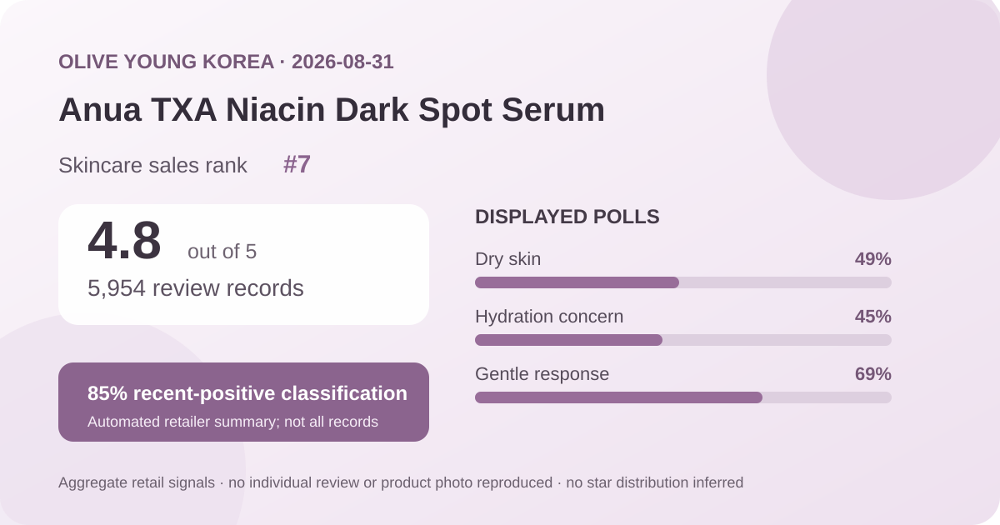
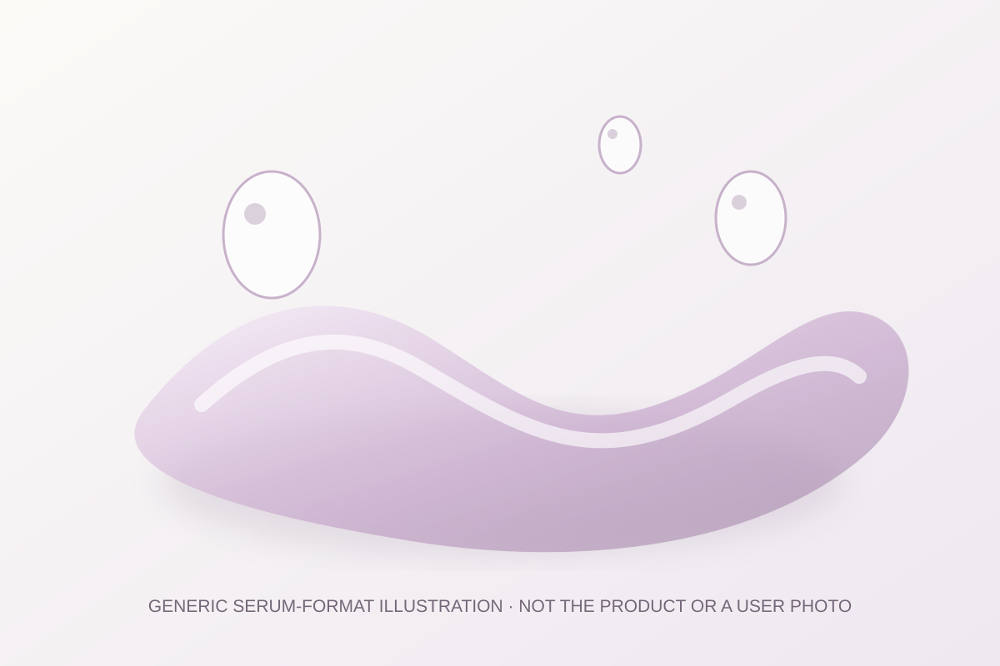

Data captured August 31, 2026. This article uses only the retailer's displayed product title, skincare sales rank, aggregate rating, review count, survey shares, anonymous automated themes, and dated price and pack display. No individual review, reviewer name, product photograph, or user photograph is reproduced or translated. I did not test the product.

The short version: Anua TXA Niacin Dark Spot Serum ranked seventh in the captured Olive Young Korea skincare sales list and displayed 4.8 out of 5 from 5,954 review records. Its survey panel showed dry skin 49%, hydration concern 45%, and a gentle response at 69%. An anonymous automated summary classified 85% of recent feedback as positive. These are retail feedback signals, not proof that the serum treats marks, changes skin tone, or suits every user.
The narrow conclusion is positive: within the retailer's rating system, 5,954 linked records produced a one-decimal display of 4.8 on capture day. That is a meaningful feedback base for understanding sentiment inside this listing. It shows that the aggregate leaned favorable, but it does not reveal what result each reviewer expected, how long the product was used, or whether every record refers to the exact promotional pair shown now.
The page did not expose a trustworthy five-, four-, three-, two-, and one-star breakdown. A 4.8 average can arise from more than one distribution, and rounding hides additional detail. This analysis therefore does not invent a five-star share, reconstruct a distribution, or claim that the average was stable before or after the capture moment.
Volume does not turn retail feedback into a representative study. People must buy through this storefront, choose whether to post, and may be influenced by incentives, delivery, packaging, price, expectations, or option changes. The 4.8 average is useful for comparing the direction and scale of visible commerce feedback; it is not a clinical outcome or a probability that one person will have the same experience.
This was the leading displayed skin-type response. It describes representation in the poll, not a dry-skin performance score.
This identifies the leading concern response. It is not a hydration instrument reading or proof of lasting moisture.
This is a subjective aggregate response, not an allergy test, safety assessment, or guarantee for reactive skin.
The percentages answer three different questions and should not be added or averaged. Olive Young did not display a separate denominator for each survey, so there is no basis for assuming all 5,954 linked records answered every prompt. The largest response in a poll also does not erase the experiences represented by other choices.
Dry skin at 49% describes who led the displayed skin-type poll. It does not demonstrate that the serum is better for dry skin than for another group. Hydration concern at 45% identifies an interest selected by respondents rather than a measured moisture gain. The 69% gentle response is encouraging at the aggregate level, but tolerance can vary with allergies, barrier condition, other products, amount, frequency, and individual sensitivity.
The retailer's automated panel labeled 85% of recent feedback positive and grouped discussion into three broad themes: impressions that the appearance of marks became less noticeable with continued use, a moisturized or nourished feel, and brighter or more even-looking tone. Those categories can help map what shoppers talked about without reproducing anyone's words, name, or image.
They still require careful language. Automated grouping can merge different meanings, omit minority views, and misread context. The page did not present this panel as a controlled before-and-after assessment. “Less noticeable,” “brighter,” and “more even-looking” are subjective appearance impressions in self-selected retail feedback, not verified changes in pigmentation or evidence that the serum treats acne scars, melasma, or another condition.
The 85% figure applies to the retailer's recent-review classification, not necessarily every one of the 5,954 linked records. It should not be combined mathematically with the 4.8 average or the three survey percentages. Each metric comes from a different display and answers a different question.

The listing categorizes the product as a serum, but I did not open, smell, apply, or layer it. Viscosity, slip, absorption time, tack, residue, scent, pilling, and compatibility with sunscreen or makeup remain unknown here. The local illustration communicates only a generic serum format and deliberately avoids copying the product's bottle, branding, colors, or photography.
Use the directions and ingredient label on the actual market-specific package. If several active-positioned products already sit in a routine, adding everything at once makes it harder to identify the source of dryness, stinging, or another unwanted change. A retail rating cannot determine an ideal amount, frequency, order, or combination for a particular person.
The English working name reflects the Korean listing's “TXA niacin mark serum” wording. This analysis does not infer percentages of tranexamic acid, niacinamide, or any other ingredient from the title, marketing hierarchy, color, texture, or price. It also does not assume that the two-unit promotion has the same formula, label, or concentration as a similarly named product sold in another market.
Ingredient names can make a listing relevant to readers researching uneven-looking tone, but relevance is not proof. The captured review panel did not measure pigment, lesion count, scar depth, inflammation, barrier function, or a clinical endpoint. Medical or treatment conclusions would require evidence not present in this retail snapshot.
Rank seven means the listing had strong current sales momentum inside Olive Young Korea's skincare ranking at one moment on August 31. It does not mean seventh-best serum, seventh-best product for dark spots, or a stronger formula than every item below it. The captured page displayed a 59% discount, a two-unit exclusive set, coupon availability, same-day delivery, and a large number of concurrent viewers. Those commerce conditions can influence rank.
Rank and rating should remain separate. Rank describes sales activity in a retailer and period; the rating summarizes feedback linked to a listing. Neither identifies why people bought, why they scored it, or whether a particular biological outcome occurred. Rank is useful for selecting a timely product to audit, not for treating popularity as efficacy.
The captured listing described two 30 ml units, with a ₩64,000 reference price and ₩25,850 sale price. It also displayed a 10 ml basis of ₩4,308. These were storefront values on August 31, 2026, not permanent pricing or a guarantee that the same pack will remain selected.
Before comparing value, confirm the selected option, total volume, coupon conditions, seller, shipping, returns, expiry details, and final checkout total. A discounted pair lowers the displayed unit price only if both units will be used appropriately. Regional names, formulas, packaging, authorized sellers, and consumer protections may differ.
I did not independently capture and reconcile the complete current ingredient list across markets. This article therefore does not claim the serum is fragrance-free, alcohol-free, essential-oil-free, hypoallergenic, non-comedogenic, pregnancy-compatible, or appropriate for acne, melasma, eczema, rosacea, allergy, broken skin, or another medical concern. Check the current package for the exact item received.
A 69% gentle response cannot rule out unwanted experiences or predict a first use. When a known allergy, prescription, skin condition, pregnancy, or prior serious reaction makes the decision higher stakes, qualified medical guidance is more appropriate than retail aggregates. Trying a small area and introducing one new product at a time can make a reaction easier to identify, but neither guarantees safety.
Not necessarily. The site showed a rounded 4.8 average but no reliable star-by-star distribution, so this article does not reconstruct one.
Dry skin led the displayed poll at 49%. That is a representation signal, not proof of better results for dry skin.
No. The anonymous automated summary grouped subjective appearance comments, but the page did not provide a controlled or measured pigmentation result.
No. It is a subjective poll response without a separately displayed denominator, not a safety assessment or personal prediction.
No. It is a generic code-drawn serum visual, not a product photograph, user image, or firsthand test.
Anua TXA Niacin Dark Spot Serum was the highest-ranked valid unpublished candidate after six already-covered product families were skipped. The ranking and product titles matched, and the product header and review panel agreed on 4.8 stars and 5,954 linked records.
The defensible reading is that the listing had strong current sales visibility and favorable storefront sentiment. Its displayed surveys and automated themes help describe who responded and what recent discussion emphasized. Missing star distribution, unknown poll denominators, self-selection, automated-summary limits, promotional effects, unverified texture, and unverified ingredient amounts prevent stronger claims about pigmentation, treatment, hydration, safety, or personal fit.
← All reviews · Rankings · Skin-poll guide · Methodology
Published by The K-Beauty Data Desk · Aggregate data captured 2026-08-31. No individual review, name, product photo, or user photo is reproduced or translated, and I did not test the product. I received no free product and am not paid or approved by the brand. Check the dated source listing.
Data basis: Olive Young Korea's aggregate display retrieved 2026-08-31. The 4.8 average, 5,954 review count, sales-rank position, three survey shares, and anonymous automated themes are displayed retail facts. Interpretation, English working name, and recommendations are editorial. No individual review is copied, translated, or attributed.